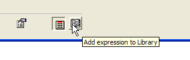
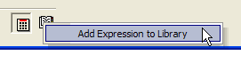
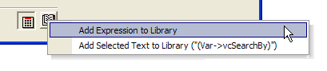
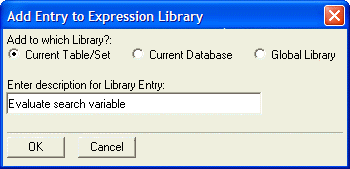
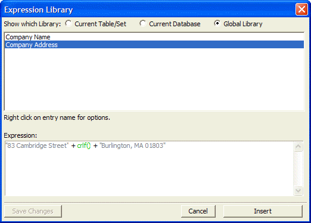

Expression Library
The Expression Library stores expressions that can be inserted into your script with only a couple of keystrokes. The Expression Library in Alpha Five V6 has been completely re-written, and is easier to use and much more flexible.
Multiple Libraries
Previously, Alpha Five had only one expression library for all tables, sets and databases. The entries in the library were stored in a table called a_code_archive.dbf.
Now, Alpha Five has an expression library for:
each table or set,
each database (e.g. .adb file), and a
global library that can be accessed, regardless of where the current table, set or database is located.
The reason for creating these multiple libraries is that an expression that you defined for, the customer table (for example), is typically not relevant when you are working with the invoice table because the two tables have different field names. So it makes sense to segregate the Library entries by table or set. However, because there may be certain expressions that are relevant regardless of what the current table/set it, Alpha Five also provides Database and Global libraries.
The table/set Libraries are stored in text files with the .expn_lib_tbl extension. These files are in the same folder as the corresponding table or set.
The database Libraries are stored in text files with the . expn_lib_db extension.
Adding an Entry to the Library
To add an expression to an expression Library, click the Add expression to Library button at the bottom right of the Expression Builder.

If you have not yet entered an expression in the Expression Builder, Alpha Five will display an error message. If you have entered an expression, but no part of the expression is currently highlighted, Alpha Five will display this sub-menu after you click the button:

On the other hand, if you have entered an expression, and you have highlighted a portion of the expression, Alpha Five will display this sub-menu after you click the button:

 Note : The second menu
choice shows the portion of the expression that is currently highlighted.
Note : The second menu
choice shows the portion of the expression that is currently highlighted.
After selecting the appropriate option, Alpha Five will ask you to describe the expression and select where you want to store it.

After clicking OK, Alpha Five will display this screen:

The top window shows the description of each item in the Library. The bottom window shows the actual expression. If you are happy with the entry, simply click the Cancel button to close the dialog. If you want to make any changes to the entry, edit the entry in the bottom window, then click the Save Changes button. To delete an entry, or change its description, right click on the entry in the top window.
Inserting an Entry from the Library into an Expression
To insert an entry from the Library into an expression (at the current insertion point), select "Library Entry" and the click the Insert button, or press the F9 key. The Library opens up. Select the entry that you want to insert and then either click the Insert button, or double click on the entry name.
Maintaining Library Entries
Once you have placed an entry into any of the libraries, the following functions are available:
Delete entry
Rename entry
Edit entry
Sort library entries
Display the Library by pressing F9. Select the entry or library and right click. Select the command from the right-click menu. If you edit an entry, press the Save Changes button.
See Also
Supported By
Alpha Five Version 6 and Above